Topic and it's importance
Protected areas, also known as conservation areas, are regions of land or water set aside to preserve the natural environment and its biodiversity. These spaces are managed for the conservation of ecosystems, species, and cultural heritage, safeguarding them from human activities like industrial development, deforestation, and pollution. By acting as reservoirs of biodiversity and regulating ecological processes, they help buffer against the effects of climate change and support communities that depend on natural resources for their livelihoods. In today's world, where environmental challenges are accelerating, protected areas are essential for preserving the planet’s ecological balance and ensuring a healthy future for both people and wildlife.
-
World Wildlife Fund (WWF)
WWF focuses on conserving critical habitats worldwide through science-driven initiatives. They work to establish new protected areas, strengthen governance in existing ones, and engage local communities in sustainable management. They also use advocacy and partnerships with governments and businesses to influence policies that protect ecosystems.
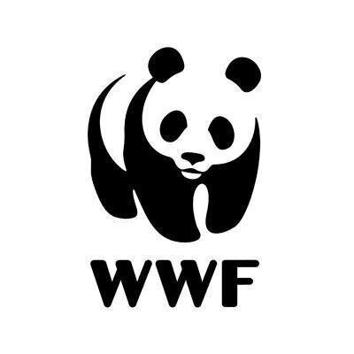 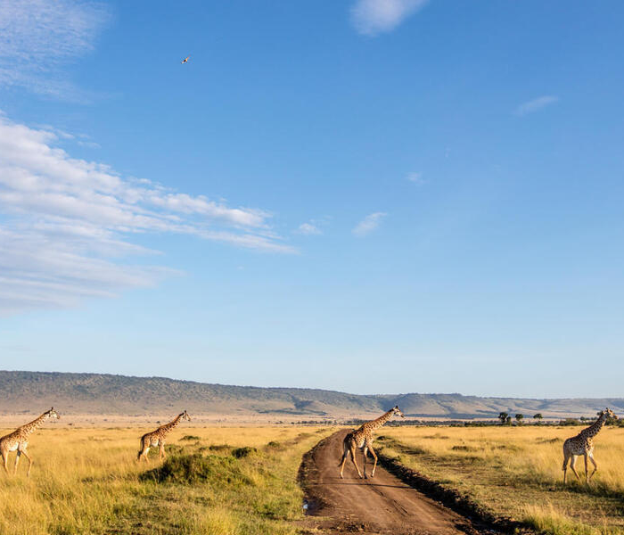 -
International Union for Conservation of Nature (IUCN)
IUCN plays a major role in the creation and management of protected areas globally. They assess and rank protected areas, develop global conservation standards, and support policy-makers with tools and resources. The IUCN Red List, which classifies species’ conservation status, also guides decisions on which areas require urgent protection.
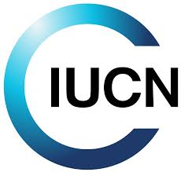 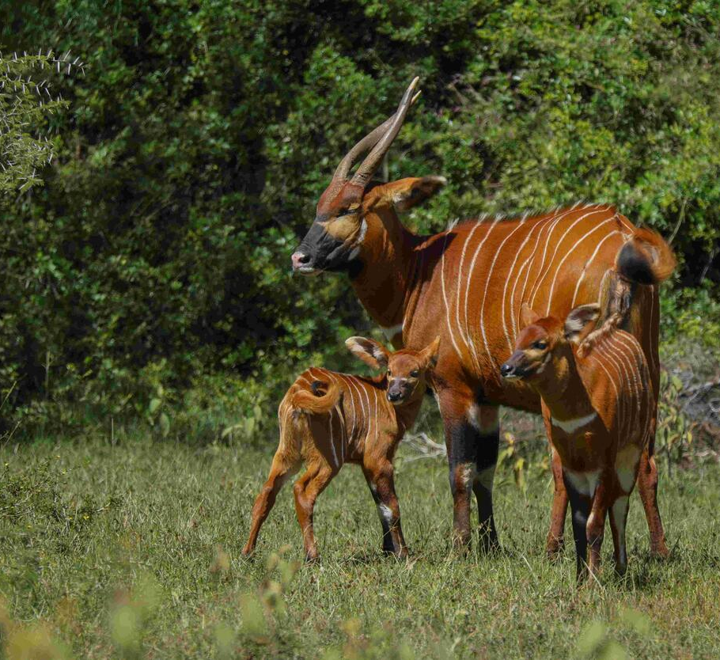 -
Conservation International
Conservation International uses a science-led approach to protect biodiversity hotspots and wilderness areas. They prioritize areas critical to human well-being and aim to establish protected regions that serve both ecological and human needs. Their strategies include community-based conservation, restoring degraded landscapes, and integrating nature into climate policy.
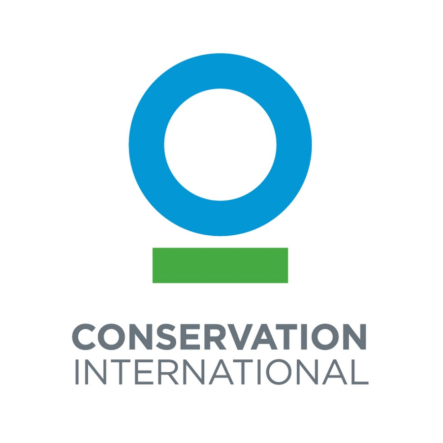 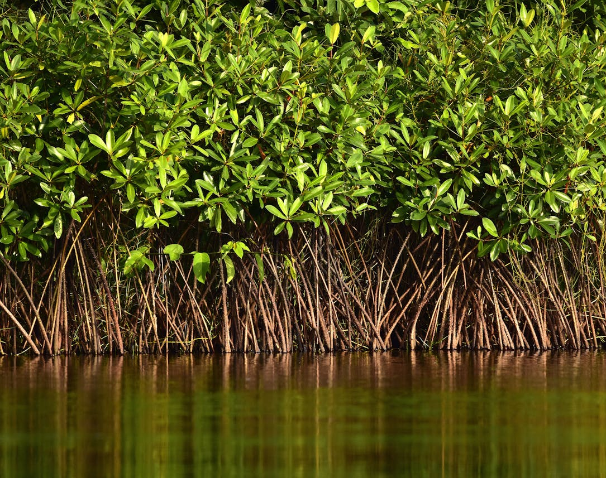 -
United Nations Environment Programme (UNEP)
UNEP supports global efforts to expand protected areas and ensure sustainable development. They promote the Global Environment Facility and advocate for the inclusion of biodiversity in the global economic agenda. Their initiatives focus on sustainable ecosystems management, climate resilience, and international cooperation to preserve biodiversity.
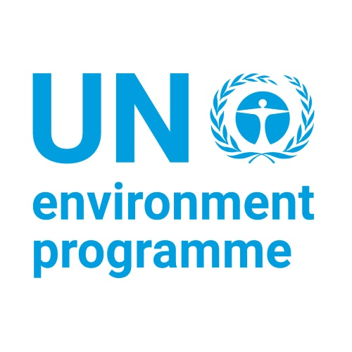 -
The Nature Conservancy
The Nature Conservancy works on conserving lands and waters through collaborative partnerships, innovative science, and a focus on preserving biodiversity. They prioritize securing large-scale protected areas and emphasize sustainable development and local engagement. They also lead in promoting climate-smart conservation practices.
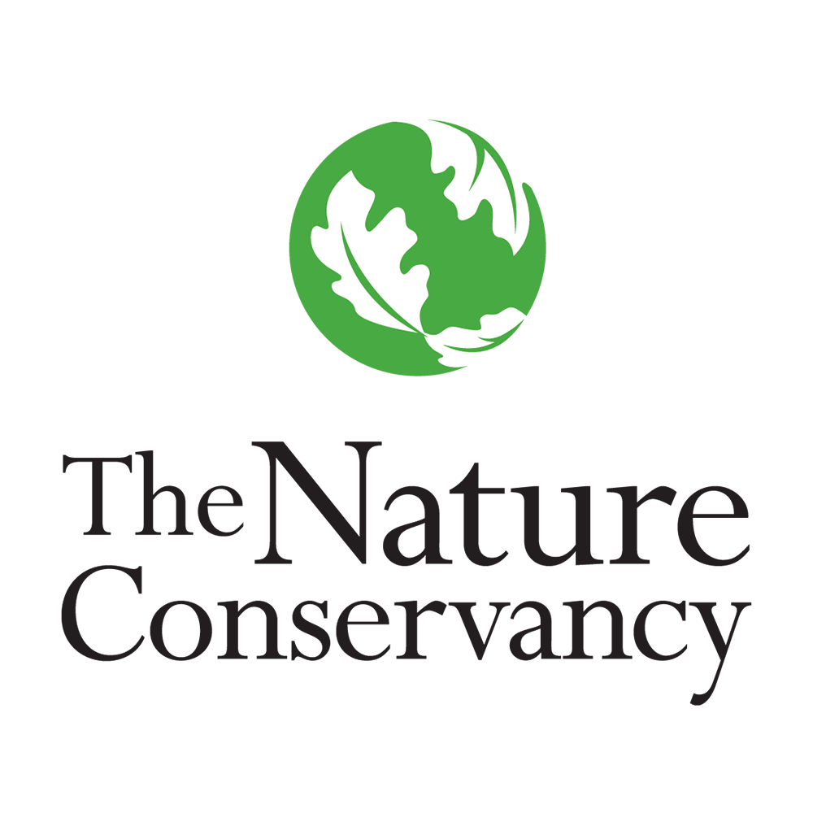 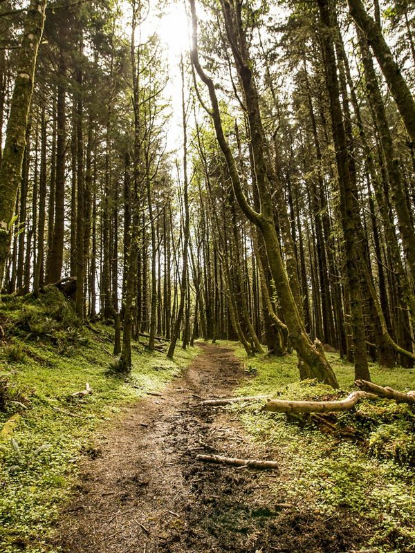 -
Protected Planet (UNEP-WCMC)
Protected Planet is the online interface for the World Database on Protected Areas (WDPA). They provide data and tracking tools to ensure transparency in global conservation efforts. Their strategy is centered around providing real-time data on protected areas and helping governments and organizations monitor progress toward international conservation goals, such as the Aichi Biodiversity Targets and the Sustainable Development Goals.
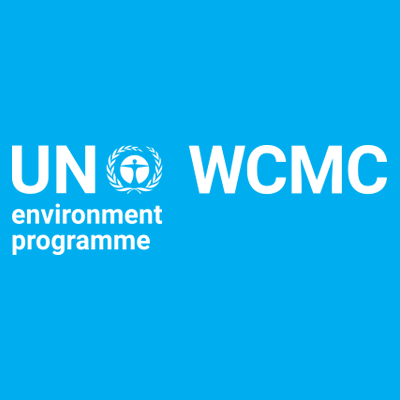 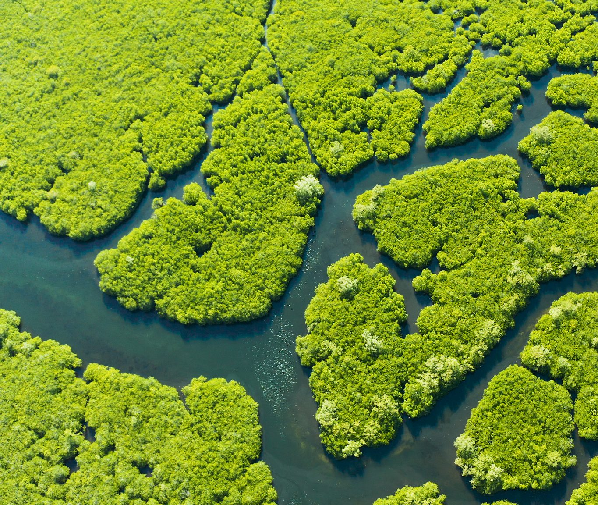